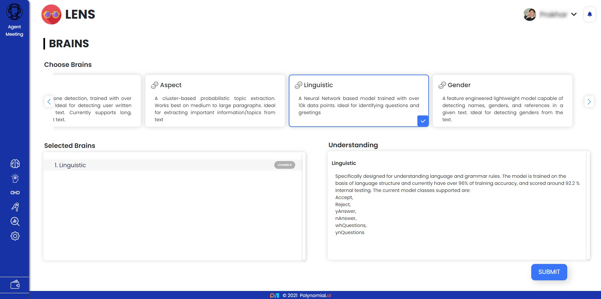

Table of Contents:
Lens Platform API:
- Add Team
- Approve
- Disable Account
- All Kits
- Get Brains Details
- Get Brains List
- Get Company Details
- Get Insights List
- Get Page Description
- Get Teams
- Get User History
- Payments
- Upload Image
- Change Password
- Generate API Key
- Get Account Detail
- Get Profile
- History
- Quota
- Register
- Update Account Detail
- Update Profile
- Upload Image
Lens Agent API:
- Add Update Agent
- Get All Agents Analytics
- Get Agent Info
- Get All Agents
- Add and Update Domain
- Agent Brain Selected
- Add and Update Data Relationship
- Data Relationship
- Data Relationship Template
- Add and Update Insight
- Agent Insights Selected
- Add and Update Domain
- API Keys
- Whitelisted Domain
- Delete Agent
- Edit Agent Settings
- Agent Settings
Lens SDK:
Lens Brains¶
Lens features state-of-the-art trained machine learning Brains that can extract detailed insights from any textual source.
Some of the Brains are :¶
Sentiment Brain¶
Sentiment Detection is a method for determining a speaker’s or writer’s mood and emotion based on a computational analysis of the text. Businesses may find Sentiment Detection Brain to be highly valuable in determining the social sentiment of their brand, product, or service. Perfect for identifying sentiment in various text parts.
A state-of-the-art transformer model was used to create this. With over 43k data points and an accuracy of 84 percent, it’s been fine-tuned. On a GPU-based system, trained for nearly 11 hours.
The number of classes supported:
Positive
Negative
Neutral
Somewhat Negative
Somewhat Positive
Emotion Brain¶
Emotion detection is the technique of finding and interpreting the emotions conveyed in textual material. In some circumstances, the sentiment brain may be unable to accurately capture the true feelings. The emotion brain is a tool for detecting and comprehending the underlying emotions expressed in textual data. Suitable for a long paragraph or a series of text.
Models based on state-of-the-art transformers were used to create this piece. With over 80k data points, it’s been fine-tuned. The current model can take a paragraph or a few lines of text and generate the necessary classifications.
The current classes supported are:
Anger
Fear
Happy
Love
Neutral
Sad
Surprise
Worry
Tone Brain¶
Tone detection is a technique for analysing and detecting emotional and linguistic tones in text. Businesses could benefit from Tone Detection Brain to learn the tone of their customers’ messages, as well as their brand, product, or service. All types of texts are supported by Tone Detection Brain.
A one-of-a-kind transformer-based model that was fine-tuned with over 2.75 million data points and trained on GPU for more than 20 hours. The data is acquired automatically from various sources, and the model is continuously trained and tested. The model’s current accuracy is 89 percent.
The classes supported are:
Analytical
Anger
Sadness
Fear
Confident
Analytical
Aspect Brain¶
Topic extraction is the process of identifying the words or phrases that, to the best of one’s ability, express the major concepts of a text. Aspect Brain works best with paragraphs that are medium to large in size.

Clustering and component analysis, an unsupervised learning method, are used to extract some of the significant words or phrases.
Linguistic¶
To determine the type of sentences, a neural network-based model was trained to analyse and interpret the language and grammatical rules. Identifying questions and greetings has never been easier.
Specifically created to aid in the comprehension of language and grammar standards. The model is trained on the basis of linguistic structure with over 10k data points, and it presently has a training accuracy of over 96 percent and an internal testing accuracy of roughly 92.2 percent.
The current model classes supported are:
Accept
Reject
yAnswer
nAnswer
whQuestions
ynQuestions
Gender¶
A lightweight model with advanced features capable of recognising names, genders, and allusions in a text. Gender detection from text is a breeze with this tool.

The current data points stand at 3.23l, making it one of the largest data samples currently available, spanning all ethnicities. The model combines context resolvers and classifiers to identify references to people and names, as well as their genders.